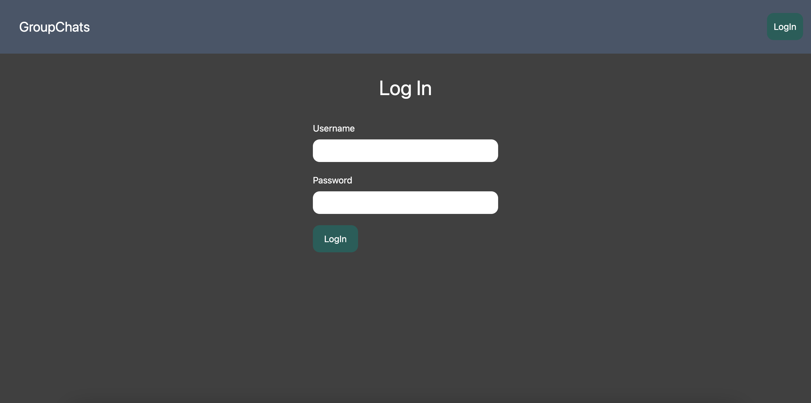
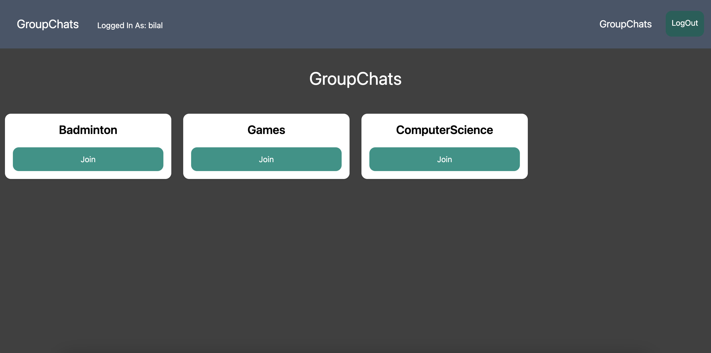
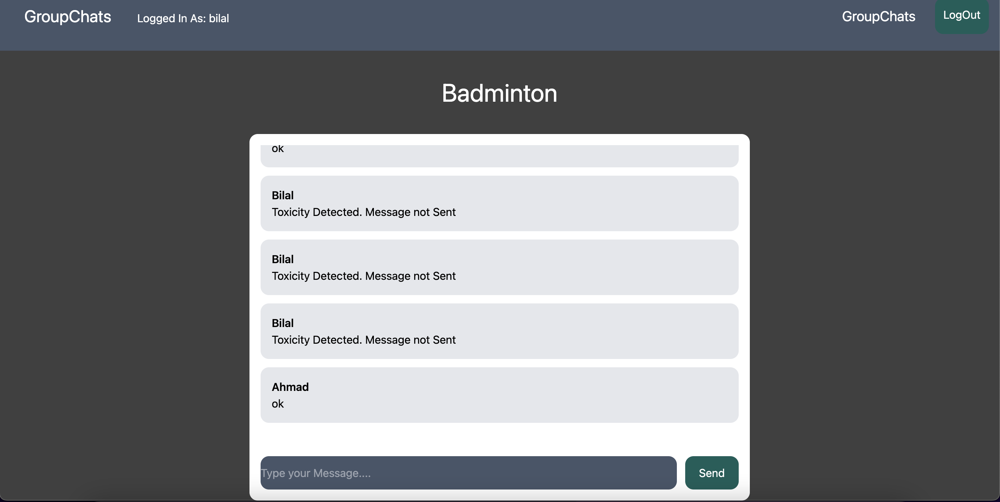

Group Chats - Toxicity Detection
Carried out Data Manipulation, Features Selection, and Data Analysis using Pandas, Matplotlib, Seaborn, and WordCloud Python Libraries on the dataset.
Utilised Python's Machine Learning Libraries such as Scikit-learn and NLTK to Pre-process the data and build a ML model.
Used HTML, Tailwind CSS, JavaScript for frontend and Django for backend.
Utilised Django's Channels to handle WebSockets for Asynchronous group chats implementation.
Technologies:
- - Python
- - Django
- - Scikit-learn
- - HTML
- - Tailwind CSS
- - Javascript
- - Django's Channels
- - NLTK
Landing Page

Logged In Page

Group Chat Messages Page
